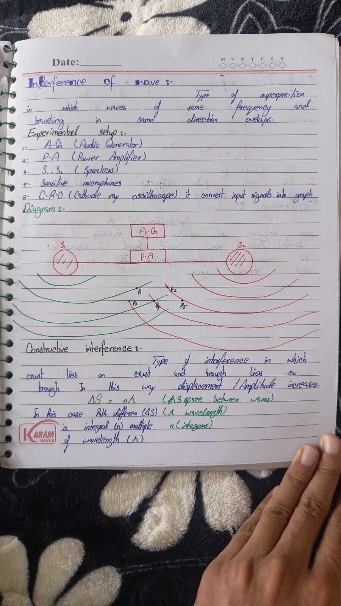

Interference of wave
Absent Day 2 · Experimental setup · Constructive
Definition (board):
Type of superposition in which waves of same frequency and traveling
in same direction overlaps.
Experimental setup :-
-
A.G (Audio Generator)
-
P.A (Power Amplifier)
-
S₁, S₂ (Speakers)
- Sensitive microphones
-
C.R.O (Cathode ray
oscilloscope) — it convert input signals into graph
Diagram :-
Green rings = S₁ · Red rings = S₂ · P₁…P₅ = intersection / observation
points (board diagram).
Constructive interference :-
Type of interference in which crest lies on crest and trough lies on
trough. In this way displacement / Amplitude increases.
ΔS = nλ
(ΔS space between waves) (λ wavelength) (n integers)
In this case Path differen (ΔS) is integral (n) multiple of wavelength
(λ).
Board Check: n = 0, 1, 2,
3… → path difference is whole number of wavelengths → bright / loud.
Original Notebook Page

Add ch7_p7.jpg next to this file